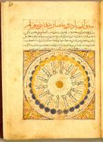

Ongetitelde collectie van ongeveer vijfenvijftig divinatorische teksten en tabellen. Perzisch. Handschrift op papier, 55 ff., 245 x 150 mm. Anatolië(?), tweede helft van de veertiende eeuw(?) -- (Or. 563)
Aan de middeleeuwse hoven in het Midden-Oosten waren alle mogelijke soorten van divinatie in gebruik om de vorst in staat te stellen een juiste beslissing op het gunstigste ogenblik te nemen. Tal van technieken zijn daarbij ontwikkeld, deels van oud-Arabische oorsprong, deels ook van hellenistische herkomst. Na de assimilatie van de Griekse wetenschappen in het eerste millennium vond een synthese plaats en kwamen handboeken als het hier getoonde in zwang, eerst in het Arabisch geschreven, later ook in het Perzisch, en nog weer later ook in de andere islamtalen, zoals het Turks en Urdu. De taal van dit handschrift is Perzisch, in de veertiende eeuw alweer enige eeuwen naast het Arabisch in zwang geraakt als taal voor literatuur en wetenschap.
Het handboek is waarschijnlijk samengesteld voor de Qaramanidische vorst cAla' al-Din, die leefde in de tweede helft van de veertiende eeuw. (Zijn exlibris is er ingeschreven). Het bevat een menigte teksten, bij voorbeeld over de chronologie van profeten en koningen, over voortekenen voor juiste beslissingen, over alle mogelijke soorten van astrologische en kalendertechnische afwegingen, over droomuitleg, menselijke relaties, het gebruik van bepaalde soorten voedsel en kleding, feestdagen, meteorologie, Pythagoreïsche voorspellingen, medische zaken enzovoorts, kortom alles wat een koning of vizier nodig heeft bij het nemen van beslissingen die het voortbestaan van de dynastie zouden kunnen beïnvloeden. Deze teksten worden in dit handschrift meestal gegeven in de vorm van tabellen (Arabisch, 'gadwal'), of cirkels (Arabisch: ‘da‘ira’). De uitvoering van de tabellen is van hoge kwaliteit en grote kunstzinnigheid. In deze tabellen worden bij voorbeeld standen van de planeten of van de tekens van de dierenriem afgezet tegen dagen van de week of maanden van het jaar. In de tabel staat dan bij voorbeeld opgegeven of er in een bepaalde situatie sprake is van een gunstige of ongunstige gelegenheid.
De bladzijde waarop het handschrift hier openligt (folio 16r) vertoont een cirkel met de achtentwintig schijngestalten van de maan. In de buitenste cirkel staan de vakken met de nummers van de achtentwintig dagen van de maanmaand. In de volgende cirkel zijn de bijbehorende schijngestalten aangegeven, van nieuwe maan links beneden en dan in de richting van de klok, tot weer de volgende nieuwe maan. Het donkere deel van de maan is aangegeven in blauw, dus als lucht, het lichtende in goud. (De schilder wist waarschijnlijk, dat als hij hiervoor zilver had gebruikt, wat meer voor de hand had gelegen om maanlicht weer te geven, dit na enige tijd zwart zou zijn geworden door oxydatie.) De schijngestalten worden door achtentwintig sectoren met de zon verbonden, die in het punt van de cirkel staat. De tekst tussen de lijnen van deze sectoren bevat gegevens over het ondergaan (dagen een tot en met veertien) en het opgaan van de maan (dagen vijftien tot en met achtentwintig). Dat in het centrum van de cirkel de zon staat is opmerkelijk: kennelijk was er bij de auteur een notie van heliocentriciteit. De tekst boven de cirkel vertelt dat de maan haar licht ontleent aan de zon. De af- en toename van het licht van de maan hebben, zo zegt het commentaar, de afstand of nabijheid van de zon als oorzaak.
Op een voorgaande bladzijde (folio 14v) staat rechts een tabel van de dagen van de maand, en een van de maanden van het zonnejaar, met raadgevingen van de profeet Mohammed over het al dan niet laten verrichten van een aderlating. Op enkele van de bladzijden volgend op die waarop de schijngestalten van de maan zijn afgebeeld, staan tabellen met gegevens over de keuze der handelingen in verband gebracht met de stand van de maan en de tekens van de dierenriem, verder een tabel over meteorologie, een met ziekten, die zijn afgezet tegen de maanden van de lunaire kalender en ten slotte een tabel over het zien van de nieuwe maan. Dit laatste was belangrijk omdat het zien van de nieuwe maan het begin van de volgende maand in het lunaire jaar betekende. Een vorst moest de regels hiervoor kennen.
Literatuur
- P. de Jong et M.J. de Goeje, Catalogus codicum orientalium Bibliothecae Academiae Lugduno Batavae. Volumen tertium. Lugduni Batavorum 1865, p. 155-156 (nr. 1093).
| vorige pagina | top pagina |